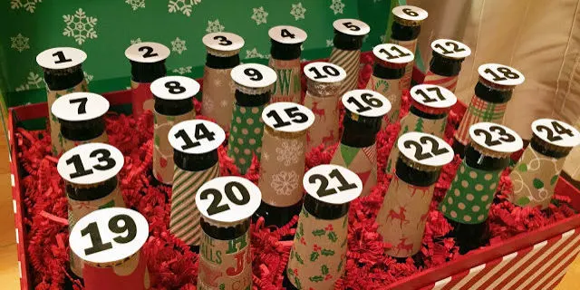

We have never published a full release calendar before. There are entirely reasonable grounds for this — brewing is unpredictable, ingredients fail, fermentations surprise you, and committing publicly to a specific beer in a specific month is essentially an invitation for the universe to demonstrate its indifference to your plans. But after four years of requests from Beer Club members and taproom regulars, we have decided to take the risk. Here, in full, is what we intend to brew and release in 2025.
Q1: January to March
January opens with the highly anticipated release of our Bourbon Barrel Imperial Stout — Batch 22, which has been aging in former Maker's Mark barrels since February 2023. At nearly two years in oak, it is the longest we have ever cellared a beer, and Hari Kiran describes it as "the most complex thing we have ever produced." It will be limited to 600 bottles, available exclusively to Beer Club members for the first 48 hours. February brings our first entirely new recipe of the year: a cold-fermented Kölsch-style ale brewed with California-grown pale malt and Hallertau Blanc hops, designed to capture the clean, dry expressiveness of the Cologne originals while celebrating local ingredients. March sees the return of our Dry-Hopped Saison — an annual spring release that changes its dry hop selection each year based on what is freshest from our Yakima Valley supplier at the time of brewing.
"The foraged saison might be the strangest thing we have ever attempted. It might also be the best." — Hari Kiran, Head Brewer
Q2: April to June
April is our most anticipated release of the first half of the year: Pacific Divide Reserve, the first variation on our flagship IPA we have ever produced commercially. The grain bill and yeast are identical to the original Pacific Divide; the entire hop programme is replaced with Nelson Sauvin and Riwaka from New Zealand. This should produce something that tastes unmistakably like our flagship in structure, but with a wine-like, gooseberry-and-grapefruit character that its predecessor has never had. May brings a Gose — our first foray into sour, saline wheat beer territory — brewed with natural Californian sea salt and hand-harvested Meyer lemons from a farm in Sonoma County. June sees the year-round launch of our American Wheat, graduating from seasonal to permanent tap status following three years of strong demand.

Full 2025 Release Schedule
- Jan: Bourbon Barrel Imperial Stout — Batch 22 (600 bottles)
- Feb: California Kölsch (keg + can)
- Mar: Dry-Hopped Saison — 2025 hop selection
- Apr: Pacific Divide Reserve — NZ hops (limited)
- May: Meyer Lemon Gose (keg + can)
- Jun: American Wheat (year-round launch)
- Jul: West Coast Session IPA — 3.8% ABV
- Aug: Foraged Wild Saison (wildcard — limited)
- Sep: Fresh Hop Harvest Pale Ale
- Oct: Autumn Amber Ale (no pumpkin)
- Nov: Oatmeal Stout (winter annual return)
- Dec: Christmas Spiced Porter + Barrel Reserve
The August Wildcard: The Foraged Saison
The August release is the one the entire team is simultaneously most excited and most nervous about. The Foraged Wild Saison will be brewed using only locally foraged botanical adjuncts — yarrow, elderflower, California bay laurel leaves, and black sage — as a complete replacement for commercial hops. This is an attempt to produce a pre-hop era beer using entirely regional, hand-gathered ingredients, in the spirit of the gruits that preceded the widespread adoption of hops as the universal bittering and preserving ingredient in European ale. We have made a small test batch. The results were genuinely strange, genuinely interesting, and wholly unlike anything else we make. Whether the full production batch achieves the same result is entirely unknown.